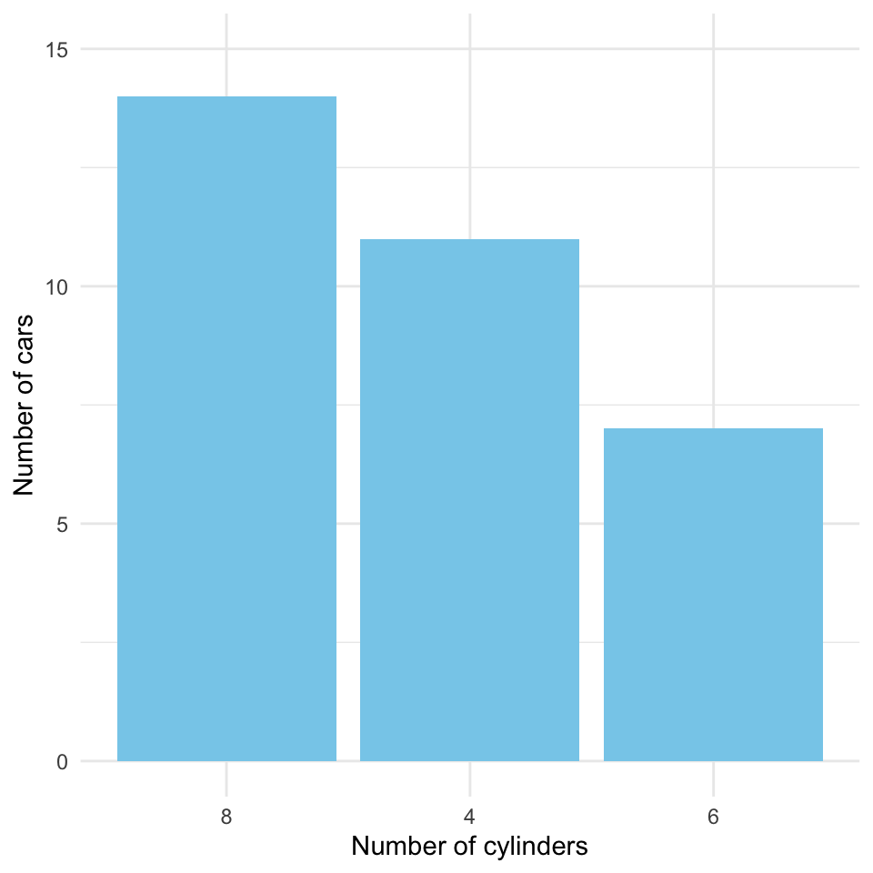
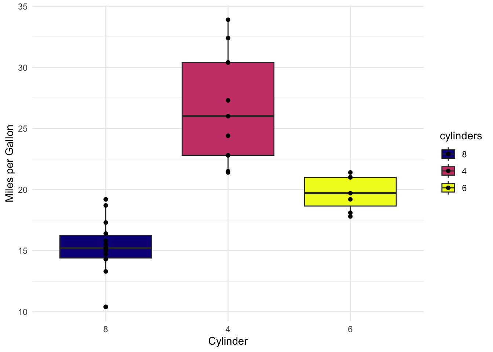
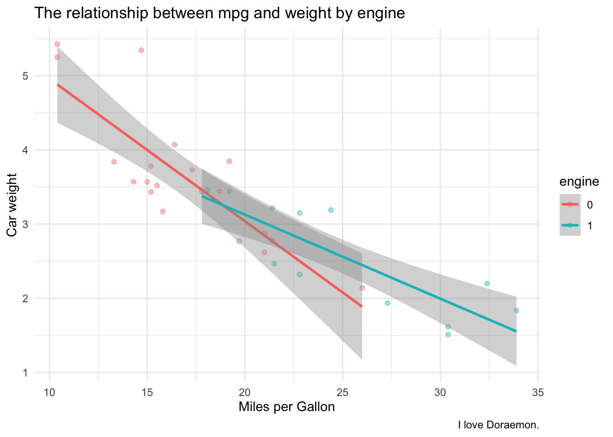

Level 1 Data Visualization: Plot the mtcars Dataset
Author
Affiliation
Lisa Zhu
University of Chicago
Published
February 19, 2025
Abstract
This document analyzes the mcar dataset, and presents the relationship between several variables to demonstrate my ability using ggplot.
Keywords
ggplot2, data visualization
Objective
The objective of this assignment is to practice constructing simple visualizations using the ggplot2 package in R. In this Level 1 assignment, you will work with simple datasets and focus on the most commonly used layers and aesthetics. Most tasks are outlined in the assignment script. You may want to review the Data Visualization Walkthrough before you begin.
You may additionally or alternatively complete the Level 2 Data Visualization assignment. In Level 2, you will work with a more complex dataset and perform additional visualization tasks with less direct instruction. The Level 2 assignment has more opportunities to demonstrating meeting course standards than this Level 1 assignment and is recommended for those who are already comfortable with the tasks in this assignment. In particular, the Level 2 assignment requires you to parse and use the theme() layer in complicated ways to customize the appearance of your plots.
Instructions
If you have not already done so, pull the latest changes from the d2mr-assessment repository to ensure you have the most up-to-date version of the assignment files. Confirm you are working in your clone of the repository.
Open viz-level-1.qmd in RStudio (you are here) and follow the instructions in the Setup section below to load and inspect the built-in mtcars dataset.
Note: You will perform simple data transformation in a chunk below to prepare the mtcars dataset for visualization. Save your transformed dataset to a new object, mtcars.viz, so you can still access the original dataset if needed.
In the chunks provided, recreate each of the 6 plots (provided as .png files). You may need to render this notebook to see the images, or you can open the files directly. Recreate the plots as closely as possible, noting where you get stuck or have questions.
Note: The image files are included in the assessment repo in the 03_data-viz/01_viz-level-1/plots/ folder. If you don’t see the files, you may have something in your .gitignore preventing them from being pulled. You can either edit your .gitignore to allow the files to be pulled or download the files directly from the GitHub repository.
At several points in this document you will come across questions or non-coding exercises. Answer these questions in the text of this .qmd document, immediately below the question.
Optional: Create additional plots using the mtcars.viz dataset or extend one or more of the plots above. Add your code to the “Optional plotting” section at the end of the document. Do not add this optional work to the main code chunks that recreate the plot images.
Setup
I imported five packages: tidyverse, knitr, janitor, quarto, and viridis. I tried installing apaquarto, but didn’t succeed using option 2. However, I tried moving the extension folder from other directories to this one, and it seems to be working.
#| label: libraries-seed#| echo: TRUErequire ("tinytex") # I installed TinyTex in Terminal by running "quarto install tinytex"
── Conflicts ────────────────────────────────────────── tidyverse_conflicts() ──
✖ dplyr::filter() masks stats::filter()
✖ dplyr::lag() masks stats::lag()
ℹ Use the conflicted package (<http://conflicted.r-lib.org/>) to force all conflicts to become errors
library(quarto)library(knitr)library(janitor)
Attaching package: 'janitor'
The following objects are masked from 'package:stats':
chisq.test, fisher.test
library(viridis)
Loading required package: viridisLite
library(tinytex)library(flextable)
Attaching package: 'flextable'
The following object is masked from 'package:purrr':
compose
library(kableExtra)
Attaching package: 'kableExtra'
The following objects are masked from 'package:flextable':
as_image, footnote
The following object is masked from 'package:dplyr':
group_rows
#| label: inspect-mtcars#| echo: TRUE## Look at the structure and first few rows of the mtcars datasetstr(mtcars)head(mtcars)view(mtcars)
The names of the variables in the mtcars dataset may not be immediately clear. You can find a description of the variables in the mtcars dataset by running ?mtcars in the R console.
Consider the structure of the dataset, particularly the datatypes of each variable. Based on the descriptions of each variable in the documentation, not all variables are in the most appropriate format for analysis or visualization.
QUESTIONS:
Which variables in the mtcars dataset should be treated as numeric variables?
mpg; cyl; disp; hp; wt; qsec; gear; carb; vs; am
Of those you believe should be considered numeric, are they all also continuous variables? Are there any non-continuous numeric variables?
Continuous & Categorical Variables
continuous:
mpg
cyl
disp
hp
wt
qsec
gear
carb
categorical:
vs
am
Which variables in the mtcars dataset should be treated as factor variables?
vs; am
Of those you believe should be considered factors, are they ordered or unordered?
Both are unordered.
Data preparation
Based on your inspection of the mtcars dataset and your answers to the above questions, use dplyr, tidyr, and forcats functions to prepare the dataset for visualization.
You will need to change the data types for some variables. You may also want to rename variables and factor levels for clarity. Renaming variables and levels now can make your visualization simpler later, but you can do it directly in the your plotting functions, too.
#| label: prepare-mtcars#| echo: TRUE## Prepare the mtcars dataset for visualization## Assign your wrangled data to a new object `mtcars.viz` so you have access ## to the original if neededmtcars.viz <-as_tibble(mtcars)#mtcars.viz <- mtcars %>%# Optionally, rename variables for claritymtcars.viz %>%rename (miles_per_g = mpg,cylinders = cyl,displacement = disp,horsepower = hp,rear_axle_ratio = drat,weight = wt,mile_time = qsec,engine = vs,transmission = am)
#Export the new dataset mtcars.viz to the directory, and read in the data:write_csv (mtcars.viz, "mtcars.viz.csv")read_csv("mtcars.viz.csv")
Rows: 32 Columns: 11
── Column specification ────────────────────────────────────────────────────────
Delimiter: ","
dbl (11): miles_per_g, cylinders, displacement, horsepower, rear_axle_ratio,...
ℹ Use `spec()` to retrieve the full column specification for this data.
ℹ Specify the column types or set `show_col_types = FALSE` to quiet this message.
Figure 2: mean, median, & sd of miles per gallon for each cylinder type
Basic Plots
Plots 1-3 require only data, aesthetics, and geoms. Depending on how you prepared your data above, you may also need to do very simple (~1 line) transformation on mtcars.viz before piping into the ggplot() function.
Recreate this bar plot of the number of cylinders:
Bar plot of cylinder count
#I used forcats here!plot2 <- mtcars.viz %>%mutate (cylinders =as.factor (cylinders)) %>%mutate (cylinders =fct_relevel (cylinders, c("8", "4", "6"))) %>%ggplot (aes (x = cylinders)) +geom_bar(fill ="skyblue") +ylim (c(0,15)) +theme_minimal() +labs (x ="Number of cylinders", y ="Number of cars")plot2

Figure 4: The number of cars by cylinder
Scatter plot
Recreate this scatter plot of car weight vs. miles per gallon:
Scatter plot of car weight vs. miles per gallon
#| label: fig-plot3-scatterplot#| echo: TRUE#| fig-cap: Miles per gallon by car weight#| fig-width: 5#| fig-height: 5plot3 <- mtcars.viz %>%ggplot (aes (x = weight, y = miles_per_g)) +geom_point(color ="skyblue") +labs (x ="Car weight", y ="Miles per Gallon") +theme_minimal()plot3
Intermediate Plots
The following three plots require additional layers or aesthetics beyond the basic plots above, and may require some additional simple data transformation.
Box plot
Recreate this box plot of miles per gallon by number of cylinders, with points showing the distribution:
Box plot of miles per gallon by number of cylinders
What transformation, if any, do you need to make to the data before piping it into ggplot()?
turn cylinder into a factor variable and reorder the cylinder into 8, 4, 6.
What geoms and aesthetics are used in this plot? Does layer order matter, and if so, how?
data points should lie above the scatterplot, so first geom_boxplot and then datapoints
What additional information is required to produce this plot? What layers or aesthetics would you need to add to the plot to include this information?
the mean for each cylinder type & the standard deviation.
#| label: fig-plot4-boxplot#| echo: TRUE#| fig-cap: Miles per Gallon by cylinder#| apa-note: "This graph shows miles per gallon when the car has 4, 6, or 8 cylinders."#| fig-width: 5#| fig-height: 5plot4 <- mtcars.viz %>%mutate (cylinders =as.factor (cylinders)) %>%mutate (cylinders =fct_relevel (cylinders, c("8", "4", "6"))) %>%ggplot (aes (x = cylinders, y = miles_per_g, fill = cylinders)) +geom_boxplot() +geom_point() +theme_minimal () +labs (x ="Cylinder",y ="Miles per Gallon") +scale_fill_viridis(option="plasma", discrete=TRUE)plot4

Faceted scatter plot
Recreate this faceted scatter plot of car weight vs. displacement, with regression lines for each facet:
Faceted scatter plot of car weight vs. displacement
What transformation, if any, do you need to make to the data before piping it into ggplot()?
MPG has to be separated into low & high
What geoms and aesthetics are used in this plot? Does layer order matter, and if so, how?
color fill, line fill, line style.
What additional information is required to produce this plot? What layers or aesthetics would you need to add to the plot to include this information?
standard deviation (grey area), slope & intercept
#| label: fig-plot5-faceted-scatterplot#| echo: TRUE#| fig-cap: Weight vs. displacement by MPG category#| apa-note: "Linear regression was used in this example."#| fig-width: 5#| fig-height: 5library (grid)plot5 <- mtcars.viz %>%mutate (low_high_mpg =ifelse(miles_per_g >mean(miles_per_g), "high mpg", "low mpg")) %>%ggplot (aes (x = weight, y = displacement)) +geom_point(color ="purple", shape =2) +facet_wrap(~ low_high_mpg) +geom_smooth (method ="lm", se =TRUE, color ="skyblue", linetype ="dashed") +theme_minimal() +xlim (c(0, 6)) +labs (caption ="I definitely know thing about cars.") plot5
`geom_smooth()` using formula = 'y ~ x'
#I don't know how to add the title on the top left & bottom right corners. The following lines don't work:#+# annotation_custom(# grob = textGrob("Explanation: The boxplots show distribution of highway mileage.", # gp = gpar(fontsize = 8, col = "black")),# xmin = Inf, xmax = Inf, ymin = -Inf, ymax = -Inf)
Stacked bar plot
Recreate this stacked bar plot of transmission type by weight class:
Stacked bar plot of transmission type by weight class
What transformation, if any, do you need to make to the data before piping it into ggplot()?
We need to categorize weight from class 1-5 & reorder the classes. Then, we need to assign auto & manual to the transmission variable.
What geoms and aesthetics are used in this plot? Does layer order matter, and if so, how?
Perhaps we can use barplot. The point is to reorder classes by frequency from lowest and highest.
What additional information is required to produce this plot? What layers or aesthetics would you need to add to the plot to include this information?
#| label: fig-plot6-stacked-barplot#| fig-cap: Stacked barplot of frequency by weight class categorized by automatic or manual transmission type#| echo: TRUE#| fig-alt: "Magic beans can fly."#| outwidth: 40%library(tidyverse)view (mtcars.viz)mtcars.viz %>%mutate (auto_or_man =ifelse (transmission =="1", "Man.", "Auto"))
#Attempt 1: to output five classes (didn't work)Class_output (2.1)
[1] "Class 2"
Class_output (4.2)
[1] "Class 4"
#Attempt 2 using case_when worked!#I used forcats here!plot6 <- mtcars.viz %>%mutate (auto_or_man =fct_recode(transmission, "Man."="1", "Auto"="0")) %>%mutate (weight =case_when ( weight <2~"Class 1 (<2)", weight >=2& weight <=3~"Class 2 (2.1-3)", weight >=3& weight <=4~"Class 3 (3.1-4)", weight >=4& weight <=5~"Class 4 (4.1-5)", weight >5~"Class 5 (>5)")) %>%mutate(weight =factor(weight, levels =names(sort(table(weight), decreasing =TRUE)))) %>%ggplot (aes (x = weight, fill = auto_or_man)) +geom_bar () +coord_flip () +theme_minimal() +guides(fill =guide_legend(title ="Transmission Type")) +labs (caption ="weight class ordered by total frequency",x ="Weight class (sorted)",title ="Distribution of transmission types by weight class") +theme(axis.title.x =element_blank (),axis.text =element_text(colour ="steelblue", face ="italic"))plot6
Review
Which plots were you able to fully recreate successfully? Did you encounter any challenges along the way?
I created all of them. 2. Which plots were you only partially able to recreate? What challenges did you encounter that limited your ability to fully recreate the plot? What additional information or skills would you need to complete the plot?
I need to know what color scheme was used in the original plot 4.
Optional plotting
If you have time and would like to practice more, try creating one or more plots of own design using the mtcars.viz dataset or adding to one of the plots above. You can use any combination of geoms, aesthetics, and layers you like. Whether you start from scratch or build on an existing plot, create your plots in code chunks below. (Leave the chunks above as your work recreating the plots as-is.)
For each optional plot you create or extend, include a brief description of the plot below the chunk and any additional information you think is relevant.
plot7 <- mtcars.viz %>%ggplot (aes (x = miles_per_g, y = weight, color = engine)) +geom_point (alpha =0.4) +geom_smooth (method ="lm") +theme_minimal () +labs (caption ="I love Doraemon.",x ="Miles per Gallon",y ="Car weight",title ="The relationship between mpg and weight by engine")plot7
`geom_smooth()` using formula = 'y ~ x'

Figure 5: The relationship between mpg and weight by engine
plot6
knitr::include_graphics ("plots/plot6.png") #Compare with the original ones in the folder "plots"
ggsave("Distribution of transmission types by weight class.png", plot6, dpi =300, width =7, height =5, path ="/Users/lisazhu/Desktop/D2MR/objectives1to5/my plots")ggsave("Stacked bar plot of transmission type by weight class.png", plot5, dpi =300, width =7, height =5, path ="/Users/lisazhu/Desktop/D2MR/objectives1to5/my plots")
`geom_smooth()` using formula = 'y ~ x'
ggsave("Miles per Gallon by cylinder.png", plot4, dpi =300, width =7, height =5, path ="/Users/lisazhu/Desktop/D2MR/objectives1to5/my plots")ggsave("Scatterplot of miles per Gallon by cylinder.png", plot3, dpi =300, width =7, height =5, path ="/Users/lisazhu/Desktop/D2MR/objectives1to5/my plots")ggsave("The number of cars by cylinder.png", plot2, dpi =300, width =7, height =5, path ="/Users/lisazhu/Desktop/D2MR/objectives1to5/my plots")ggsave("Counting by weight.png", plot1, dpi =300, width =7, height =5, path ="/Users/lisazhu/Desktop/D2MR/objectives1to5/my plots")
Submission & Assessment
To submit:
Add & modify the assessment.md in this mini-project’s directory:
Check off all objectives you believe you have demonstrated
Indicate which objectives you are meeting for the first time (if any)
Complete any relevant open-ended items
Push your changes to your centralized assignment repository on GitHub.
Confirm that Dr. Dowling and your section TA are added as collaborators to your repository.
Submit your work in your next open mini-project assignment by including the following information in the text box:
The title of the assignment: “Level 1 Data Visualization: Plot the mtcars Dataset”
A link to the directory for this assignment in your centralized assignment repo
Footnotes
The data was extracted from the 1974 Motor Trend US magazine, and comprises fuel consumption and 10 aspects of automobile design and performance for 32 automobiles (1973–74 models).↩︎


-1.png)